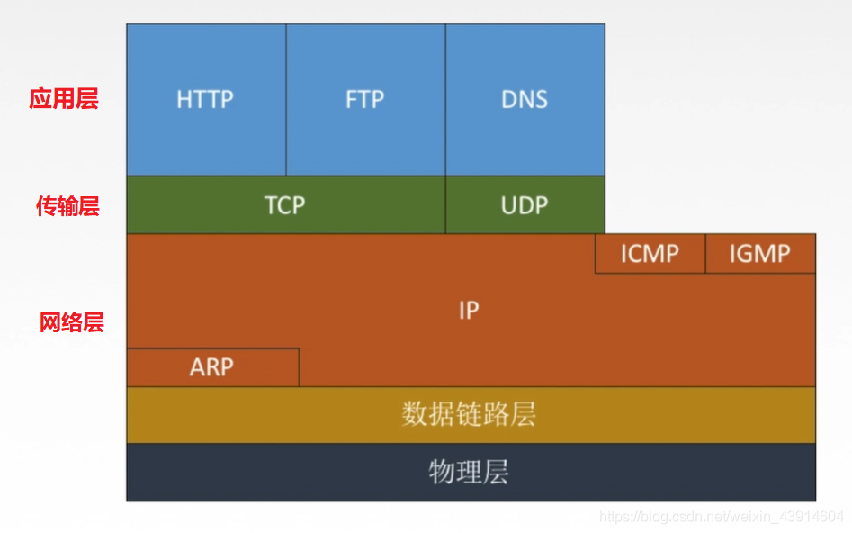
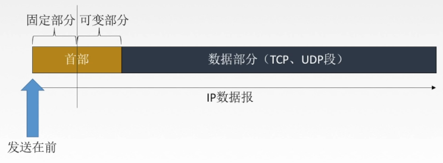
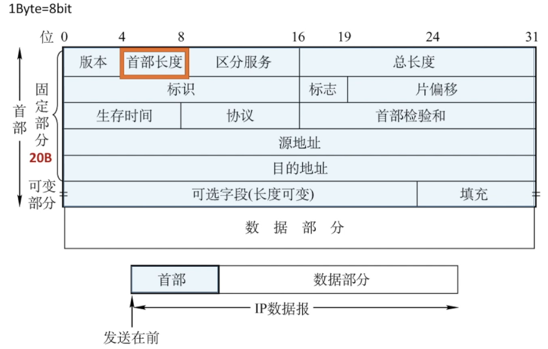
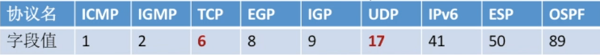
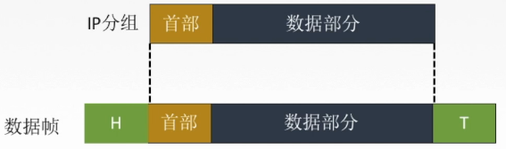
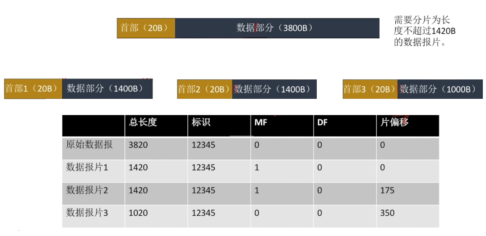

1.TCP/IP协议栈

2.IP数据报格式
网络层将传输层的数据打包后，如果数据很小，可以称为IP数据报，如果数据过大则进行分片，每一片称为IPv4分组。一般数据都比较多，大部分情况都是分组。
一个IP分组由首部和数据两部分组成。首部前一部分的长度固定，共
20B，是所有IP分组必须具有的。在首部固定部分的后面是一些可选字段，其长度可变，用来提供错误检测及安全等机制。

- 版本：占4位。IPv4 / IPv6
- 首部长度：占4位。单位是4B， 最小为5。
- 区分服务：占8位。指示期望获得那种类型的服务
- 总长度：占16位。首段+ 数据，单位1B
- 标识：同一数据报的分片使用统一标识
- 标志：只有2位有意义：x _ _
- 中间位DF（Don't Fragment）：
DF=1禁止分片；DF=0允许分片 - 最低位MF（More Fragment）：
MF=1后面“分片”；MF=0代表后面最后一片/没分片
- 中间位DF（Don't Fragment）：
- 片偏移：指出较长分组片后，某片在原分组中的相对位置。以8B为单位。
- 生存时间：IP分组的保质期。经过一个路由-1，变成0则丢弃
- 协议：数据部分的协议

- 首部检验和：只检验首部
- 源IP地址和目的IP地址：32位
- 可选字段：0~40B，用来支持排错、测量以及安全等措施。
- 填充：全0，把首部补成4B的整数倍
3.IP数据报分片
3.1最大传送单元MTU
链路层数据帧可封装数据的上限。
以太网的MTU的1500字节。
一个链路层数据报能承载的最大数据量称为最大传送单元(MTU)。因为IP数据报被封装在链路层数据报中，因此链路层的MTU严格地限制着IP数据报的长度，而且在IP数据报的源与目的地路径上的各段链路可能使用不同的链路层协议，有不同的MTU。例如，以太网的MTU为
1500B，而许多广域网的MTU不超过576B。当IP数据报的总长度大于链路MTU时，就需要将IP数据报中的数据分装在两个或多个较小的IP数据报中，这些较小的数据报称为片。
如果所传送的数据报长度超过某链路的MTU值：分片
3.2 IP数据报分片
- 标识：同一数据报的分片使用统一标识
- 标志：只有2位有意义：x _ _
- 中间位DF（Don't Fragment）：
DF=1禁止分片；DF=0允许分片 - 最低位MF（More Fragment）：
MF=1后面“分片”；MF=0代表后面最后一片/没分片
- 中间位DF（Don't Fragment）：
- 片偏移：指出较长分组片后，某片在原分组中的相对位置。以8B为单位。
3.3 分片例题

3.网络层转发分组的流程
网络层的路由器执行的分组转发算法如下:
- 从数据报的首部提取目的主机的IP地址D，得出目的网络地址N。
- 若网络N与此路由器直接相连，则把数据报直接交付给目的主机D，这称为路由器的直接交付;否则是间接交付，执行步骤3)。
- 若路由表中有目的地址为D的特定主机路由(对特定的目的主机指明一个特定的路由，通常是为了控制或测试网络，或出于安全考虑才采用的)，则把数据报传送给路由表中所指明的下一跳路由器;否则，执行步骤4)。
- 若路由表中有到达网络N的路由，则把数据报传送给路由表指明的下一跳路由器;否则，执行步骤5)。
- 若路由表中有一个默认路由，则把数据报传送给路由表中所指明的默认路由器;否则，执行步骤6)。
- 报告转发分组出错。
注意:得到下一跳路由器的IP 地址后并不是直接将该地址填入待发送的数据报，而是将该IP地址转换成MAC地址(通过ARP，见4.3.4节)，将其放到MAC帧首部中，然后根据这个MAC地址找到下一跳路由器。在不同网络中传送时，MAC帧中的源地址和目的地址要发生变化，但是网桥在转发帧时，不改变帧的源地址，请注意区分。